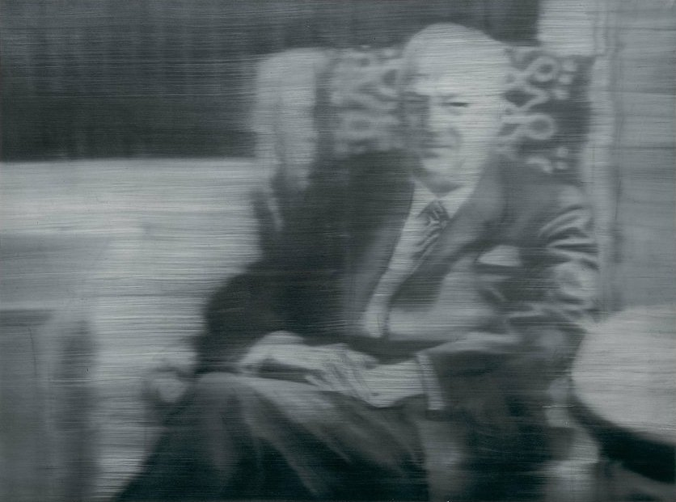

PORTRAIT SCHNIEWIND, 1964
PORTRAIT SCHNIEWIND, 1964
PORTRAIT SCHNIEWIND, 1964
PORTRAIT SCHNIEWIND, 1964
PORTRAIT SCHNIEWIND, 1964
PORTRAIT SCHNIEWIND, 1964

Artwork title
Portrait Schniewind
Artist name
Gerhard Richter
Date created
1964
Classification
Painting
Medium
Oil on Linen
Dimensions
45 in. x 62 3/8 in. (114.3 cm x 158.43 cm)
Copyright
© Gerhard Richter